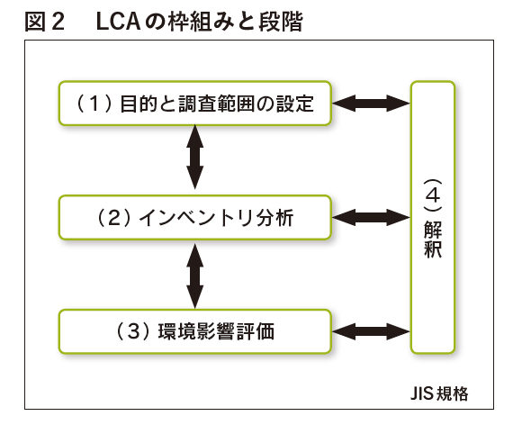

◆LCAとは
LCA（ Life Cycle Assessment：ライフサイクルアセスメント）とは、製品の資源採取から原材料の調達、製造、加工、組立、流通、製品使用、さらに廃棄にいたるまでの全過程（ライフサイクル）における環境負荷を総合して、科学的、定量的、客観的に評価する手法です。この手法は「製品」以外の、例えば「サービス」、「システム」などの目にみえないものでも対象にすることができます。
LCA 研究の始まりは、1969年に米国の飲料メーカーがリターナブルびん（洗って再利用するガラスびん）とワンウェイ容器（使い捨て容器）の環境負荷調査を民間の研究所へ委託したことからといわれています＊1。リターナブルびんとワンウェイ容器では、どちらが環境にやさしいと思いますか？ リターナブルびんはガラス、ワンウェイ容器はプラスチックの場合を例に考えてみましょう。それぞれの内容物・収納量は同じとします。一見、再利用のほうが使い捨てより出るごみが少なく環境負荷も小さいようにも思えますが、本当にそういえるのでしょうか？
実際のところ、例えばヨーロッパでは、最終製品の重さに占める包装資材の割合は、ガラスびんは36％、プラスチックは４％程度で、10倍近い開きがあります＊2。容器＋中身、あるいは空容器の重量はガラスびんのほうが格段に重いため、輸送にかかるエネルギーはリターナブルのほうが多く必要とすることになります。さらに、リターナブルの場合は回収率の良し悪しが環境負荷の増減に大きく影響するということも見落とせません。一方、ワンウェイの場合は、次の製品のための容器を新たに調達しなければならず、その分の環境負荷を考えなければなりません（他方、リターナブルの場合は、再利用のための検品や洗浄などの過程で発生する環境負荷を考える必要があります）。
以上のように、製品の「使用」や「再利用・廃棄処理の方法」といった部分的なプロセスだけで評価すると、場合により、製品全体としては環境負荷の低減につながらない結果となってしまうことがあるのです。環境影響を正確に把握するには、総合的な視点からの評価が必要です。そしてそのために開発された手法が LCA です。LCAによれば、製品を作るための資源採取から原材料の調達、製造、製品の加工・組立、流通、使用、そして廃棄にいたるまでの全過程（ライフサイクル）における環境負荷あるいはエネルギー投入量を総合し、科学的、定量的、客観的に評価することができるのです。

LCAの概念をプラスチックのライフサイクルを例に示すと、図1のようになります。
プラスチック製品には様々な製造（成形加工）方法があります。樹脂を連続して溶融させスクリューで押出しパイプ、フィルム、シートなどを作る押出成形法、加熱溶融した樹脂を金型内に射出後冷却固化して洗面器、バケツ、バンパー、パレットなどを作る射出成形法、押出成形や射出成形で作ったパリソン（円筒状のもの）を金型にはさみ、空気を入れて膨らませてシャンプー、飲料用 PET ボトルなどを作る吹込（ブロー）成形法、加熱軟化させたシートを金型にはさみ真空にすることで金型に密着させ、カップやトレイなどを作る真空成形法といったものがあります。レジ袋、ごみ袋などは押出成形法の一種であるインフレーション成形法で作られています。
◆LCAの手順
LCA の 基 本 的 な 枠 組 み と 段 階 に つ い て は、 国 際 標 準 化 機 構（ International Organization forStandardization：ISO）＊3の定める ISO14040（環境マネジメント－ライフサイクルアセスメント－原則及び枠組み）では、（ 1 ）目的と調査範囲の設定、（ 2 ）インベントリ分析（ LCI ）、（ 3 ）環境影響評価、（ 4 ）解釈の4段階により行うと規定されています（図2）。また、ISO14044（環境マネジメント－ライフサイクルアセスメント－要求事項及び指針）には、LCA を実施するための要求事項が各段階で詳細に記されています。ただし実際の適用では、定型的な方法が決められているわけではないため、LCA 実施者によってさまざまな方法が並存し、両矢印で示すように相互に作用しあっている状況にあります。
LCA の結果や解釈は、報告書として公開するほか、製品の研究開発や改善、新企画、公共政策の立案、マーケティングなどに活用することが考えられます。
次にそれぞれの段階でどのようなことを行うかを具体的にみていくことにしましょう。
（1）目的と調査範囲の設定
まず LCA の目的と調査範囲を設定します。この設定の仕方如何によって調査の具体的な方法や内容が大きく変わってしまうことになるので、注意が必要です。具体的には次の作業を行います。
• 調査をする理由を明らかにし、「製品機能」を特定する
• 調査結果を誰に伝え、どのように利用するか（用途）を明らかにする
• 「目的」に従い、「システム境界」（対象とするプロセス全体を含む自然界との境界）を区分する
図3はプラスチック製品におけるシステム境界の例です。原油などの天然資源の原料採掘から、資源輸入、原料樹脂加工、加工製品製造を経て、有効利用・単純焼却・埋立の範囲とし、LCA の調査範囲は、システム境界に入ってくる「入力」（ input：インプット）から、出ていく「出力」（ output：アウトプット）までとします。

（2）LCI（インベントリ分析）
調査対象のシステムに関連する入力と出力のデータ収集を LCI（ Life Cycle Inventory：インベントリ分析）といいます。
インベントリ分析では、ライフサイクルの各段階における材料使用量、エネルギー消費量、環境負荷物質排出量、廃棄物量などに関する入力項目と出力項目のデータを収集し、計算します。
表１は、入力・出力項目の例を示したものです。これらのデータはLCAを実施するための基礎となるものであり、LCA 評価を正しく行うには、定性的・定量的なインベントリデータを的確に収集することが求められます。

（3）影響評価
インベントリ分析のデータを利用して、製品に関わる「目に見える部分」、「目に見えない部分」の影響を評価します。この過程ではインベントリデータと特定の影響との関連づけを行い、それらの影響を理解します。評価内容の詳細度や評価手法の選択は、LCAの目的と調査範囲によって異なります。
影響評価の方法論や枠組みは、複数の評価方法が開発され、実践段階に移っているものもありますが、インベントリデータを特定の影響と正確に関連づける方法が確立されていないため、LCA に主観的要素が入ってしまうこともありえます。したがって、報告書などにはそのことを前提条件として明記し、可能な限り透明性を保つよう努めなければなりません。
（4）結果の解釈
解釈では、結論や提言を導き出すために、インベントリ分析および影響評価の各段階の結果を調査の目的に照らして評価します。（ 3 ）の影響評価と同様に、結果の解釈についても確立した方法論は存在していません。このため、「製品 A は製品 B と比べて環境負荷が大きい／小さい」といった比較評価のために調査結果を外部で使用するにあたっては、その分野の専門家からなる第三者に調査結果の正当性を客観的に検証してもらう必要があります（ Critical Review：クリティカルレビュー）。解釈で得られた情報は、製品の研究開発・改善や、企画、公共政策、市場開発など、さまざまな用途に活かすことができます。

＊1 ：社団法人未踏科学技術協会、エコマテリアル研究会編「LCAのすべて～環境への負荷を評価する」工業調査会（1995年）
＊2 ：Plastics Europeホームページ資料
＊3 ：国際標準化機構 国際的標準である国際規格 IS （International Standard）を策定するための非政府組織